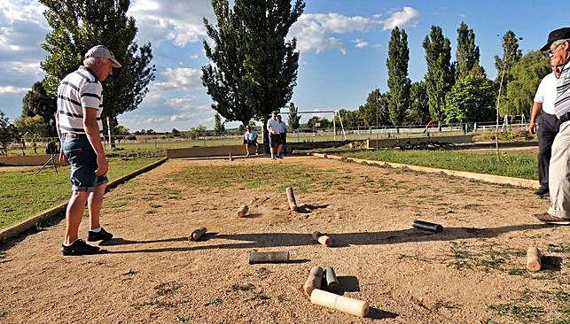

Características
La CALVA es un juego tradicional de lanzamiento de precisión, consiste en tirar piedras desde cierta distancia a la parte superior de un madero, sin tocar antes la tierra.
Terreno de Juego
- Se juega en terreno de tierra con unas dimensiones aproximadas de 20 X 6 m.
- La distancia de la raya de salida hasta la calva, en Madrid, es de 15,5 metros.
- La raya puede pisarse pero no sobrepasarse.
- A nivel escolar la distancia se adapta a la edad de los participantes
Material
Para su práctica se necesita:
- un madero o calva que puede tener 25 X 25 cm. de lado formando un ángulo aproximado de 115º; a veces se llega a utilizar un palo cualquiera sin dimensiones concretas. Al lado inferior del ángulo, que es el que irá apoyado sobre el suelo se le denomina zapata y al lado superior alzada.
- La PIEDRA es el objeto que se lanza llamado también CANTO, MORRILLO ó MARRO, principalmente solía ser de piedra, pero al ser pocos los artesanos que lo fabricaban, se empezó a utilizar una barra de metal con un peso que el propio lanzador o lanzadora adapta de una longitud de 25 cm. aproximadamente.
Número de participantes y modalidades
Competición INDIVIDUAL.
Cada jugador o jugadora en grupos de seis y de forma rotativa hace 25 tiradas, gana el que más tiradas convierta en tanto.
Competición por EQUIPOS "A LA GANGA".
Se enfrentan dos equipos de tres jugadores cada uno.
- Sale un jugador o jugadora del equipo A,
- Si no hace tanto sale un jugador o jugadora del equipo B;
- Si hace tanto se van alternando los componentes de este equipo hasta que fallen o lleguen a 9 tantos y se apuntan un juego ganado (es muy difícil hacer los 9 tantos a la primera ocasión).
- Lo más normal es que algún jugador falle antes de llegar a 9 tantos y a este fallo es al que se le llama "ganga", entonces sigue tirando el equipo contrario hasta que falle o llegue a 9 tantos;
- en cualquiera de los dos supuestos vuelve a tirar el otro equipo, con la misma normativa.
- Gana el equipo que primero llegue a los juegos que se hayan establecido al comienzo de la partida.
- También son variables el número de tantos de cada juego.
- Es muy corriente jugar a la ganga a un número de 25 tantos, o a 5 juegos de 9 tantos cada uno.
- El equipo perdedor goza del privilegio de salir.